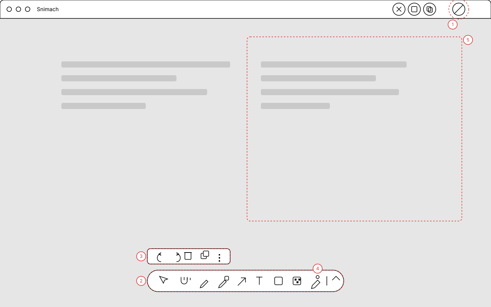
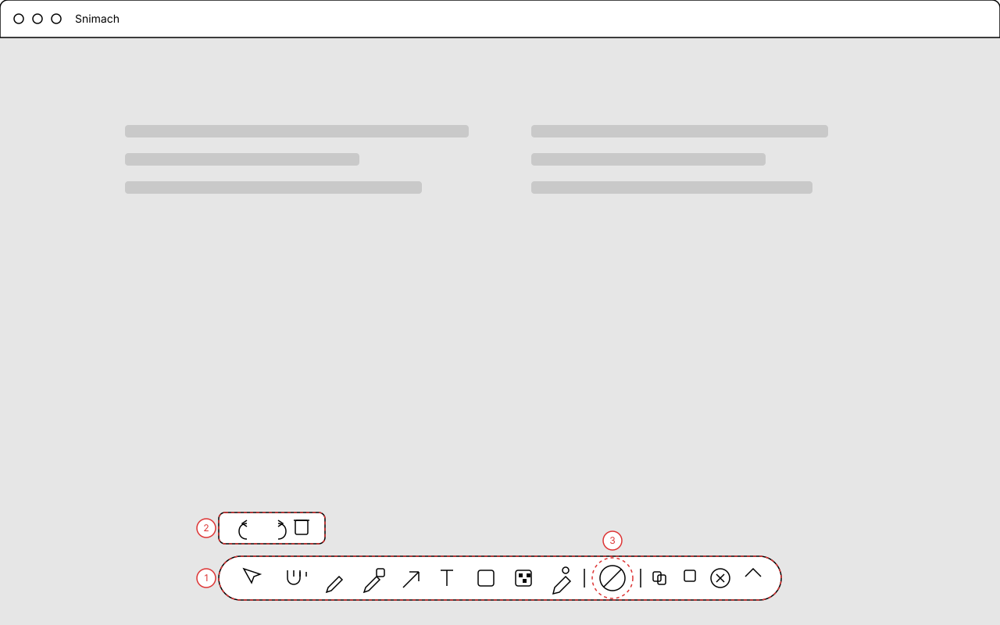
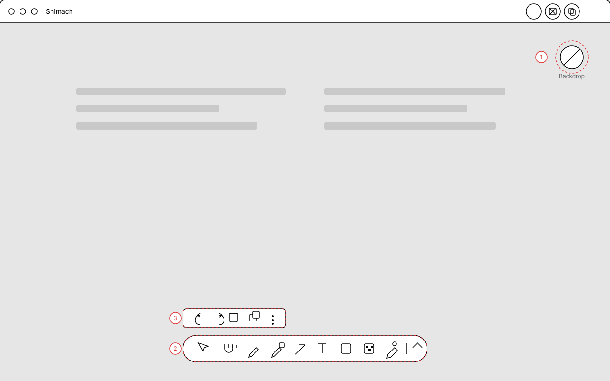
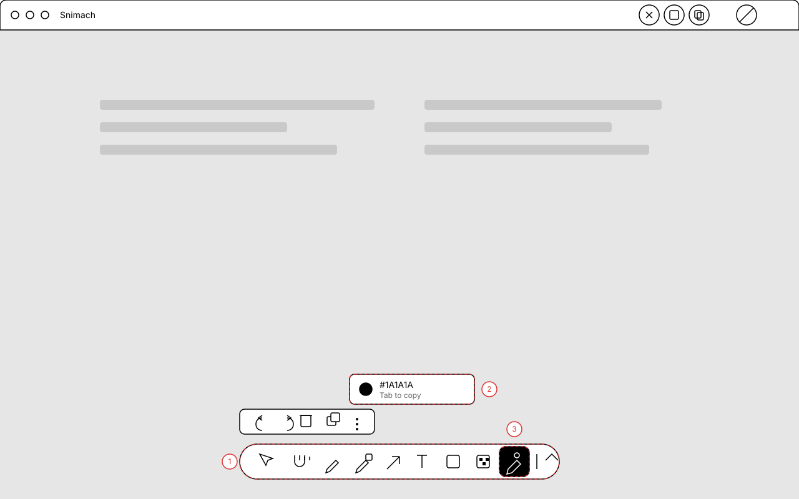

Editor layout: a floating tool pill over the shot
The strip under the toolbar moves onto the shot as a floating pill at the bottom, so the image is the layout and the controls sit on it. Backdrop collapses into a single circle you press, and the colour readout becomes a tool you activate instead of a permanent readout. Four variants differ only in where the backdrop circle lives and how much stays in the title bar.
1.Floating pill, backdrop circle in the top bar
The shot fills the window. Annotation tools float in a pill at the bottom; shot-level actions (discard, save, copy) and the single backdrop circle stay in the title bar, where they are always reachable and never cover the image.

Annotations
- 1 — Backdrop, one circle you press. A split fill hints at the gradient so it reads as a swatch, not a generic dot.
- 2 — Tool pill, centred over the shot. Nine tools, then a separator and an expand chevron.
- 3 — Secondary actions above the pill: undo, redo, delete, duplicate, more.
- 4 — The colour picker as a tool you activate, in the tool row.
- 5 — The shot is the layout. Nothing else competes with it.
Cost: medium — new pill view, plus moving copy and save out of the title bar.
2.Everything in one pill
The title bar keeps only the title. Tools, the backdrop circle, and the output actions share one pill, with undo and redo above it. Fewest places to look, at the cost of a longer pill and working actions mixed with tools.

Annotations
- 1 — One pill: tools, then backdrop, then output actions, then expand.
- 2 — Secondary actions above: undo, redo, delete only.
- 3 — Backdrop circle, inline with the tools it affects.
Cost: medium — one view, but the pill gets long and may need AppKit overflow at narrow widths.
3.Backdrop circle floats over the shot
The backdrop circle sits over the image, top-right, where the change it makes is visible behind it. The pill holds tools only and the title bar holds output actions.

Annotations
- 1 — Backdrop circle over the shot, labelled, so its effect is immediate and local.
- 2 — Tool pill, tools only.
- 3 — Secondary actions above the pill.
Cost: low — the current strip becomes a circle, and the pad becomes the preview.
4.Colour picker as an active tool
The same pill as variant 1 with the picker active: the tool shows a filled chip, and the hex chip appears only while it is on. Nothing about colour occupies the bar in the default state.

Annotations
- 1 — Tool pill with the picker in the row.
- 2 — Hex chip, only while the picker is active. Swatch, hex, and Tab to copy in one compact block.
- 3 — Active tool: filled chip, so the mode is obvious.
Cost: low — the readout view already exists; it gains a mode and only renders while active.
Open questions
- Where does the backdrop circle live? Title bar (v1), inside the pill (v2), or over the shot (v3).
- Does pressing the circle toggle or open a preset picker? A single press suggests toggle; the presets then need a home, most likely a popover from the circle.
- Do output actions stay in the title bar? Copy, save, and discard are shot-level, not annotation-level, so they may belong there even if tools float.
- Picker exits how? Selecting another tool, pressing the picker again, or Esc. Needs one answer before building.
- Window chrome: the current window is a titled panel. A floating pill assumes the shot can sit flush to the window edges, which means dropping the title bar or making it part of the shot area.